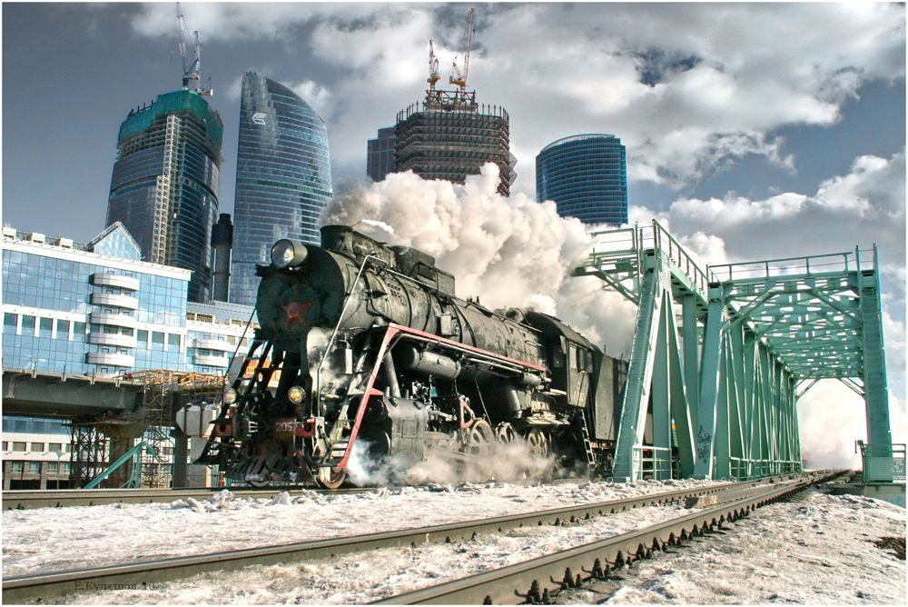

Прошлое, настоящее и будущее - три ключевых момента в жизни каждого человека и общества в целом.
О прошлом, настоящем, будущем
Глава 1. Прошлое.
Прошлое - это то, что осталось позади, независимо от того, какие события происходили и какие выводы мы из них сделали. Оно может быть полным горести и больших ошибок, но также хранит в себе драгоценный опыт и уроки, которые мы можем применять в настоящем.
Всё что было в прошлом то там и останется...


Глава 2. Настоящее
Настоящее - это то, что происходит в данный момент, когда мы чувствуем, думаем, делаем. Это время, которое мы можем контролировать и использовать для достижения своих целей и улучшения своей жизни. Также настоящее - это время, когда мы можем оказывать влияние на мир вокруг нас и содействовать процветанию общества.
В настоящее, надо переносить только позитивные эмоции,воспоминания и моменты...
Глава 3. Будущее.
Будущее - это неизвестный мир, который мы можем только представить и стремиться к его реализации. Это мир, который зависит от наших решений и действий в настоящем, который мы строим сегодня, чтобы наслаждаться его плодами завтра. Чтобы сделать будущее светлым и благоприятным для всех, мы должны использовать наши знания и ресурсы для улучшения окружающего мира и нашей жизни.
Чтобы в будущем жить в дзене надо:
